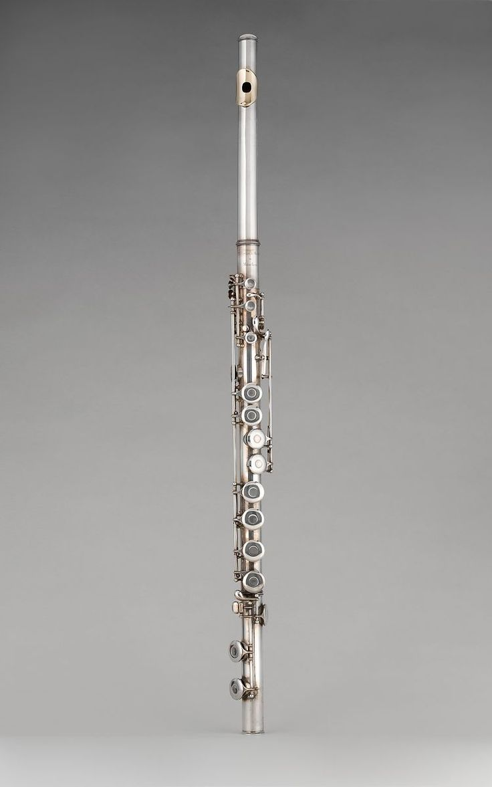

The flute is a member of a family of musical instruments in the woodwind group. Like all woodwinds, flutes are aerophones, producing sound with a vibrating column of air. Flutes produce sound when the player's air flows across an opening. In the Hornbostel–Sachs classification system, flutes are edge-blown aerophones.[1] A musician who plays the flute is called a flautist or flutist.

Paleolithic flutes with hand-bored holes are the earliest known identifiable musical instruments. A number of flutes dating to about 53,000 to 45,000 years ago have been found in the Swabian Jura region of present-day Germany, indicating a developed musical tradition from the earliest period of modern human presence in Europe.[2][3] While the oldest flutes currently known were found in Europe, Asia also has a long history with the instrument. A playable bone flute discovered in China is dated to about 9,000 years ago.[4] The Americas also had an ancient flute culture, with instruments found in Caral, Peru, dating back 5,000 years [5] and in Labrador dating back about 7,500 years.
The bamboo flute has a long history, especially in China and India. Flutes have been discovered in historical records and artworks starting in the Zhou dynasty (c.1046–256 BC). The oldest written sources reveal the Chinese were using the kuan (a reed instrument) and hsio (or xiao, an end-blown flute, often of bamboo) in the 12th–11th centuries BC, followed by the chi (or ch'ih) in the 9th century BC and the yüeh in the 8th century BC.[7] Of these, the bamboo chi is the oldest documented transverse flute.